OneSearch
OneNote on iPhone can't find what's inside your PDFs and other file attachments. OneSearch can.
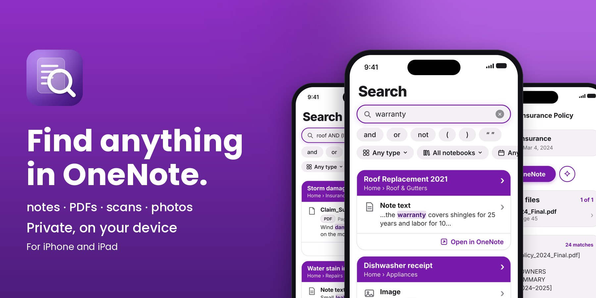
You know the answer is in OneNote somewhere. Maybe in a note, maybe inside a PDF you attached last year, maybe in a photo of a receipt. OneNote's own search often can't look inside those files, so you scroll, guess and give up. OneSearch is a companion to the official OneNote app: keep using OneNote as you do now, and use OneSearch to find things in it. It reads all of it and takes you straight to the page.
A companion to the OneNote app
OneSearch doesn't replace OneNote. Keep writing, organizing and syncing in the official Microsoft OneNote app. OneSearch sits beside it and does one job: finding things.
- Same notebooks, same account. Sign in with the Microsoft account you use in OneNote and choose which notebooks to search.
- Read-only. OneSearch never changes, moves or deletes anything in OneNote.
- Back to OneNote in one tap. Every result has an Open in OneNote button that takes you to that note in the OneNote app.
- Create and edit in OneNote. Nothing about how you take notes changes.
OneNote problems, solved
| The problem | With OneSearch |
|---|---|
| Can't search inside PDFs and attachments | ✓ Searches inside them, down to the page |
| Scans and photos aren't searchable | ✓ Text recognized on your device |
| Can't tell where a result came from | ✓ Shows notebook, section and note, and opens the match |
| Too many wrong results | ✓ AND, OR, NOT, quotes and filters |
| A typo or wrong word finds nothing | ✓ Typos forgiven, ideas found |
| Worried about privacy | ✓ On-device and read-only, no server |
What makes OneSearch different
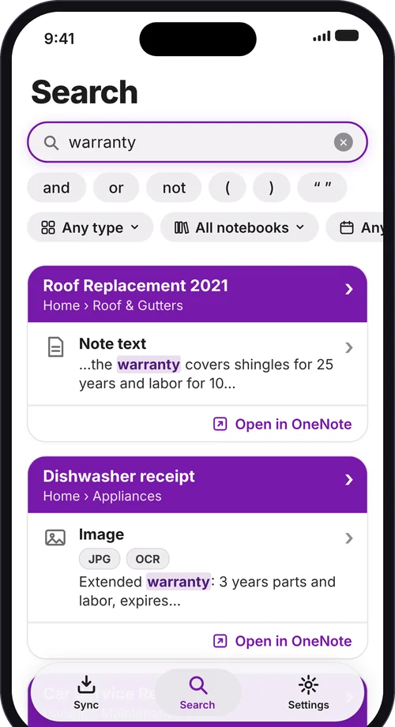
There are many ways to search, but I wanted one search that covers everything in OneNote:
- Notes, files and scans together. PDFs, Office files and images attached to your notes become searchable alongside the notes themselves.
- Shows where it is. Every result names the notebook, section and note, so you know where it came from.
- Open the match. Jump straight to the file or page, with the words you searched for highlighted.
- Filters that fit. Narrow by type, notebook, section and date.
- Related items. Notes and files that belong together are linked, so they show up together.
Search with real logic
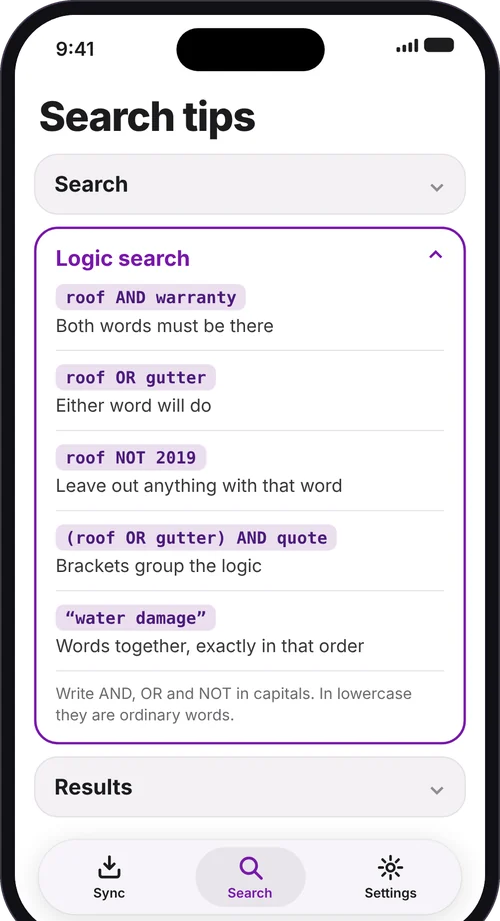
Go beyond plain keywords. The logic buttons sit right under the search box, so you never have to remember the syntax:
roof AND warrantyboth words must be thereroof OR guttereither word will doroof NOT 2019leave out that word(roof OR gutter) AND quotebrackets group the logic"water damage"words together, in order
Write AND, OR and NOT in capitals; in lowercase they are ordinary words. Prefer plain words? Just type what you mean.
Inside your files, down to the page
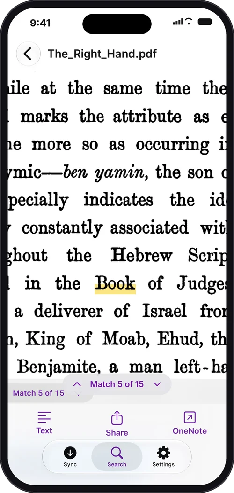
- Searches inside files. PDFs, Word, Excel and PowerPoint files, and images, down to the page.
- Reads scans and photos. Text recognition runs on your device, so a photographed receipt is as searchable as a typed note.
- Opens where the match is. No scrolling through a 60-page PDF to find the one line you wanted.
- Works where OneNote for iPhone can't. That's the whole point of OneSearch.
Typos forgiven, ideas found
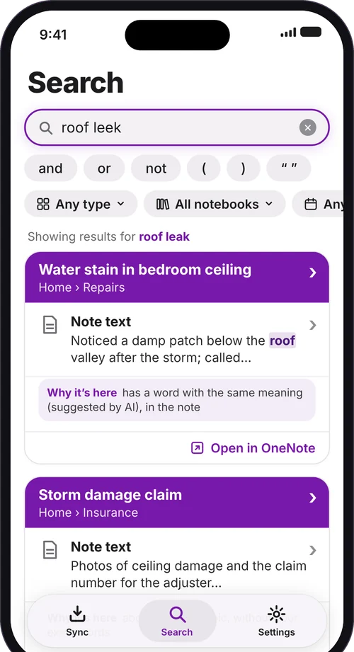
- Forgives typos. Misspell a word and you still find the note.
- Finds the same idea in different words. Search for one way of saying it and see notes that say it another way.
- Smart, but on your device. The language understanding runs on your iPhone or iPad. Nothing is sent anywhere.
Private. On your iPhone or iPad.
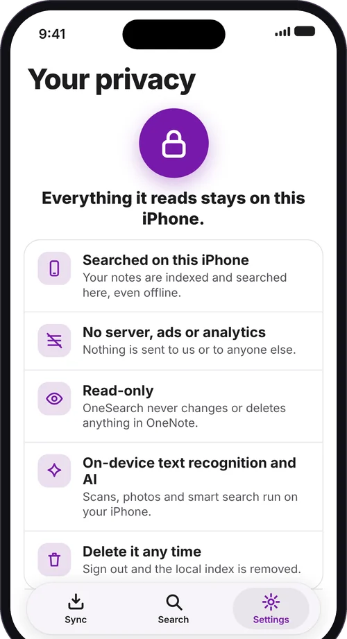
- No server, no ads, no analytics. Nothing is sent to us or to anyone else. OneSearch only talks to Microsoft to sign you in and read your notes.
- Read-only. OneSearch never changes or deletes anything in OneNote.
- On-device text recognition and AI. Scans, photos and smart search all run on your device.
- You're in control. Choose which notebooks to sync. Sign out and the local index is removed.
Instant, even offline
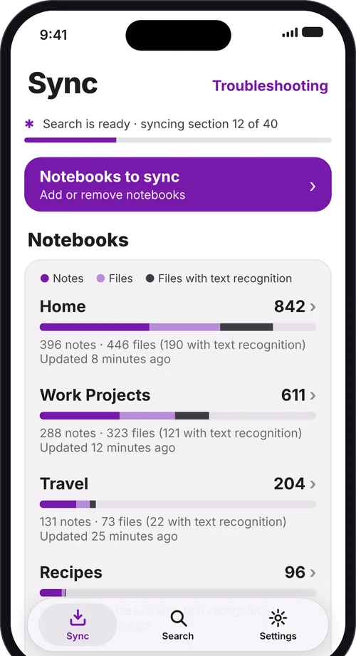
- Results appear instantly. Your notes are indexed and searched on the device.
- No connection needed. Search on a plane, in a basement, anywhere.
- Stays up to date. Sync keeps your private copy current in the background.
Made for iPhone and iPad
OneSearch runs on both. On iPad the layout adapts to the larger screen, in portrait and landscape, so search, results and PDFs have room to breathe. Your index stays on each device, and you sign in once on each.
- iPhone: fast search wherever you are.
- iPad: a roomier layout for portrait and landscape, with results and files easy to read.
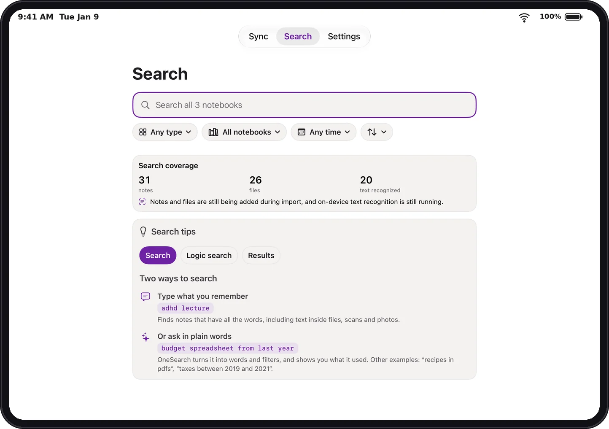
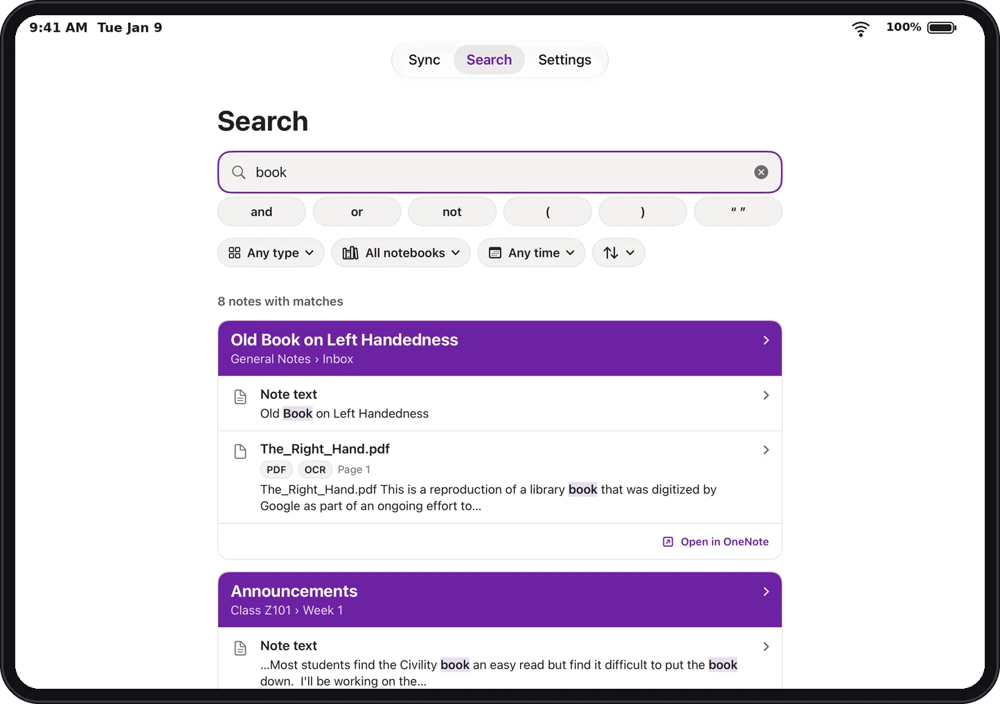
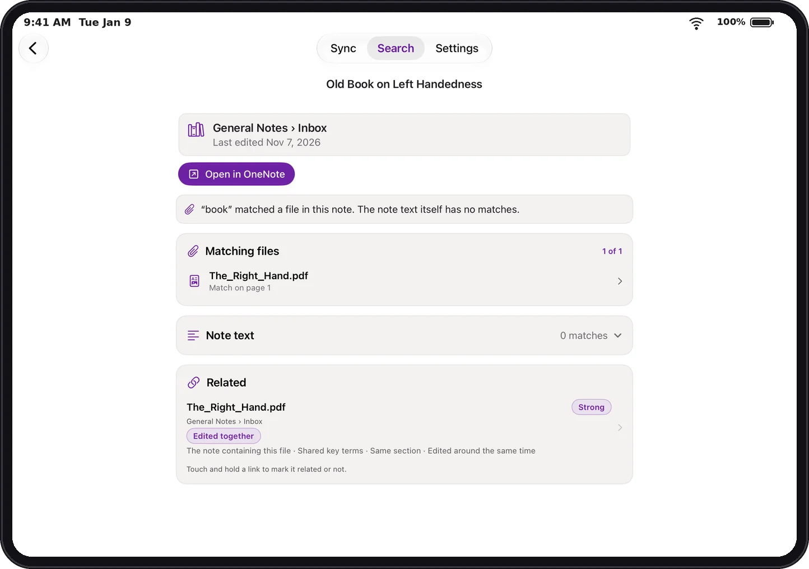
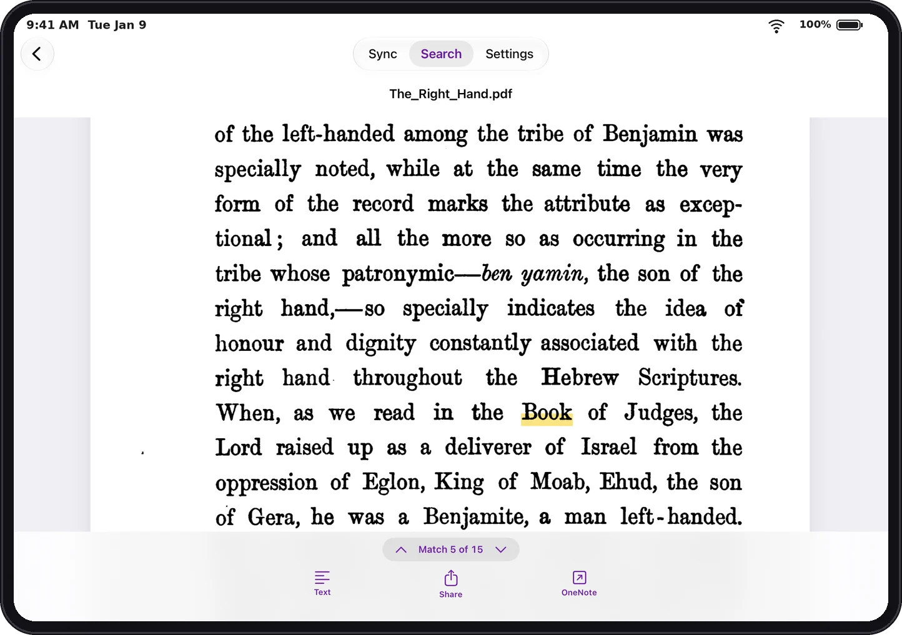
How it works
- Sign in with the Microsoft account you use in OneNote and choose your notebooks.
- Notes are searchable within minutes.
- Files and scans follow over hours or days for large notebooks, and each one becomes searchable as soon as it is read.
- Syncing continues in the background.
Frequently asked questions
Does OneSearch replace the OneNote app?
No. OneSearch is a companion. You keep creating, editing and syncing notes in the official OneNote app. OneSearch only helps you find things, and every result has an Open in OneNote button.
Will it work with my work or school account?
It depends on your organization. Personal Microsoft accounts (such as Outlook, Hotmail or Live) sign in normally. Work and school accounts are controlled by your organization's administrator. Many organizations require an administrator to approve an app before anyone can sign in to it, and some block third-party apps altogether. If you see a message that you need administrator approval, ask your IT administrator to approve OneSearch. If your organization doesn't allow it, OneSearch can't open those notebooks, and that decision is up to your organization, not OneSearch.
Is OneSearch made by Microsoft?
No. OneSearch is an independent app. It is not made by, affiliated with, or endorsed by Microsoft. It works with your own OneNote notebooks through your Microsoft account.
Can OneSearch change or delete my notes?
No. OneSearch is read-only. It never changes, moves or deletes anything in OneNote.
Where is my information stored? Is anything sent to you?
Your notes are indexed and searched on your device. There is no OneSearch server, and no ads or analytics. OneSearch only talks to Microsoft to sign you in and read your notes. Signing out removes the local index from your device. See the Privacy Policy for details.
Which files can OneSearch search inside?
PDFs, Office files (Word, Excel and PowerPoint) and images attached to your notes. Text in scans and photos is recognized on your device.
Why aren't all my files searchable right away?
Notes become searchable within minutes. Files and scans take longer, from hours to days for very large notebooks, and each one becomes searchable as soon as it has been read. Syncing continues in the background, and the Search screen shows how much is covered so far.
Does it work offline?
Yes. Search runs on your device, so results appear instantly even without a connection. A connection is only needed to sync new changes.
Which devices does it run on?
iPhone with iOS 27 or later and iPad with iPadOS 27 or later. Your index stays on each device, and you sign in once on each.
Something isn't working. Who do I contact?
Visit the Support page or email onesearchapp@gmail.com.
Get OneSearch
Requires an iPhone (iOS 27 or later) or iPad (iPadOS 27 or later) and a Microsoft account with OneNote notebooks. Install the official OneNote app from the App Store to open results in OneNote.
OneSearch is an independent app. It is not made by, affiliated with, or endorsed by Microsoft.
Screenshots show sample notebooks.